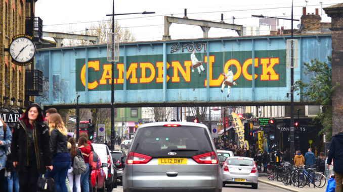
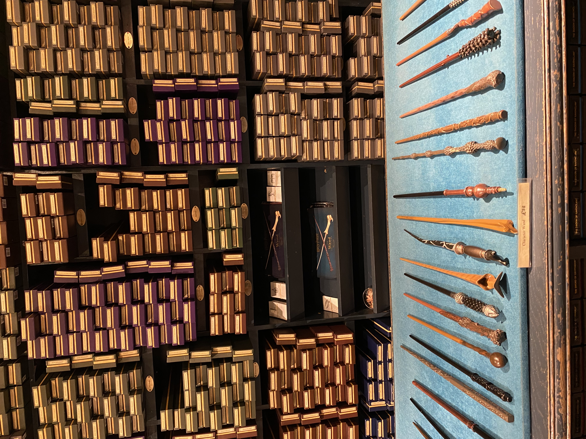
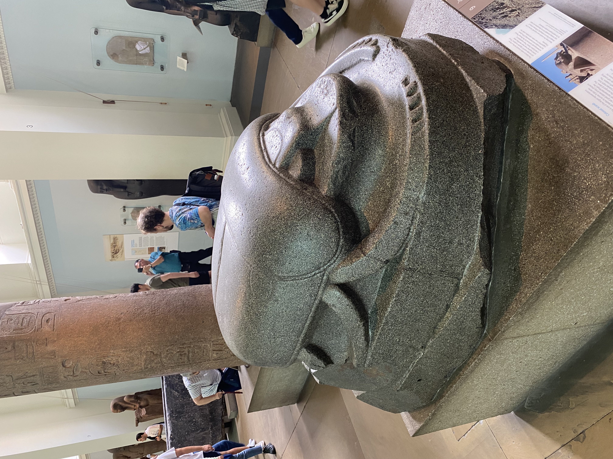
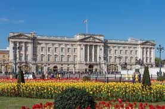
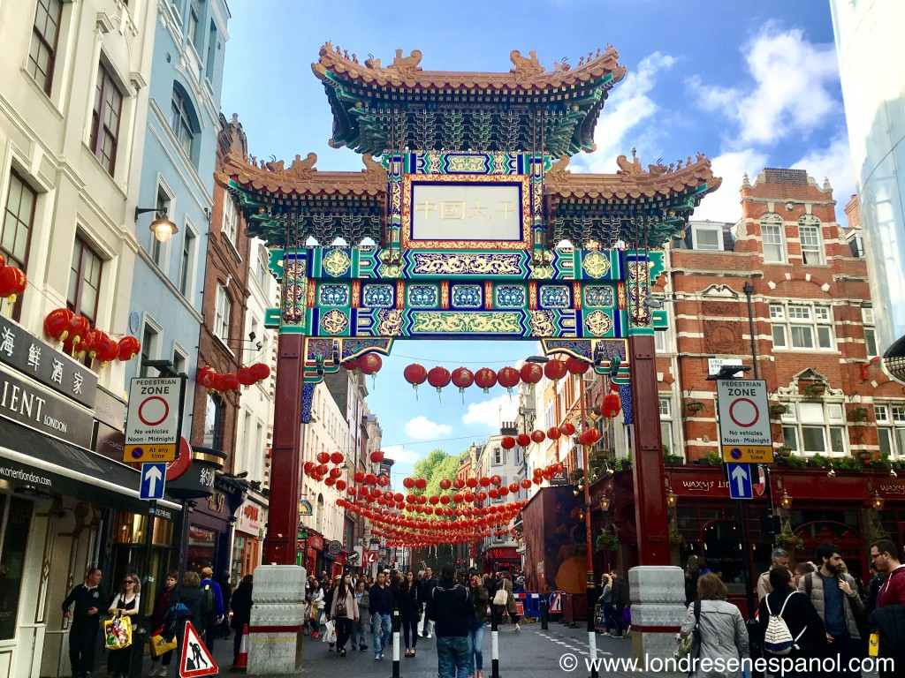
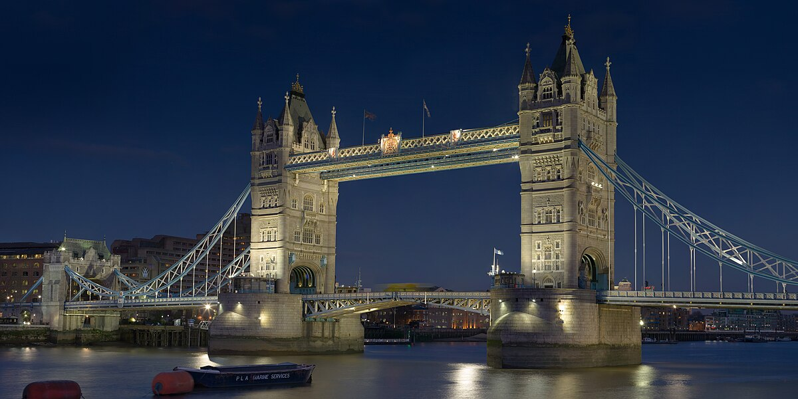

DÍA 1
En nuestro primer día visitando la ciudad de Londres, vamos a comenzar por uno de los barrios más populares y un lugar imprescindible que visitar, ¡CAMDEN TOWN!
Camden Town es un barrio del noroeste de Londres situado en el municipio de Camden. Es famoso por albergar uno de los mercados callejeros más variados y extravagantes de todo Londres. El barrio está localizado a 3,7 km al noroeste de Charing Cross. El área recibe cada fin de semana oleadas de turistas de todos los rincones del mundo y es un centro de modos de vida alternativos. Camden Town es vista como la capital del rock alternativo del Reino Unido. Su ubicación la podemos encontrar Aquí.
 El Camden Market, es en sí una atracción turística, que comenzó en 1974 al formarse el mercado artesanal de Camden Lock (aunque ya existían algunas tiendas tradicionales), y son famosas sus fachadas con una decoración creativa y única, producto de la competitividad.
Se trata de seis diferentes mercadillos donde se pueden encontrar prácticamente de todo:
- Camden Lock: el original, su mayor parte se encuentra dentro de un edificio.
- Stables Market: el más grande de todos, que principalmente ofrece ropa y muebles.
- Camden Canal Market: mercado callejero que vende sobre todo ropa
- Buck Street Market: similar al anterior
- Electric Ballroom: Mercado interior que abre solo sábados y domingos
- Inverness Street: mercado tradicional
Si eres fan de Harry Potter y vas a visitar Londres, no puedes irte de la capital británica sin visitar el lugar del famoso andén 9 y 3/4 en Londres, un lugar oculto a los muggles (gente sin poderes mágicos). Desde éste andén sale el Hogwarts Express, el tren que lleva a los estudiantes a Hogwarts, y para llegar al andén deben atravesar un muro sin llamar la atención de los muggles…
Para encontrar el andén 9 y 3/4 en la estación de Kings Cross, simplemente tenéis que saber que está situado justo al lado de la entrada que hay para acceder a los andenes 9 a 11, así que no es necesario tener billete de tren.
Al llegar nos encontraremos con una señal que pone «Platform 9 3/4». Debajo de éste cartel hay un carrito con maletas y una jaula atravesando la pared. Cuando fuimos nosotros en la jaula había un peluche de una lechuza. Se trata de un montaje perfecto para hacerse una foto!
DÍA 2
!Día de museos!
El Museo Británico (en inglés: The British Museum) es un museo de la ciudad de Londres, Reino Unido, uno de los museos más importantes y visitados del mundo. Sus colecciones abarcan campos diversos del saber humano, como la historia, la arqueología, la etnografía y el arte. El museo fue una de las primeras instituciones de este tipo en Europa, siendo el primer museo nacional en el mundo. Custodia más de ocho millones de objetos de todos los continentes, muchos de los cuales se encuentran almacenados para su estudio y restauración, o guardados por falta de espacio para exhibirlos. Cuenta con la mayor sala de lectura de la Biblioteca Británica, biblioteca que, aunque ahora tiene sede propia, hasta el año 1973 también formaba parte del museo, al igual que el Museo de Historia Natural de Londres, que cambió a sede propia en el año 1963. La sección del Antiguo Egipto es la más importante del mundo después de la del Museo Egipcio de El Cairo. La entrada al museo y a muchos de los servicios que ofrece —como el de la sala de lectura— es libre y gratuita, a excepción de algunas exposiciones temporales.
Puedes reservar tu reserva a la entrada gratuita pulsando en la siguinete imagen:
El Museo de Historia Natural (en inglés, Natural History Museum) de South Kensington, en Londres, es uno de los tres grandes museos localizados en la calle Exhibition Road, en Kensington (los otros dos son el Science Museum y el Victoria and Albert Museum). No obstante, la entrada principal está en Cromwell Road. El museo posee una variada colección con más de 70 millones de especímenes y objetos en colección, pertenecientes a varios campos de la historia natural. Las cinco colecciones más importantes son las correspondientes a las áreas de: botánica, entomología, mineralogía, paleontología y zoología.
Este museo es un centro de investigación de referencia a nivel mundial, especializado en taxonomía, identificación y conservación. Dada la antigüedad de la institución, muchas de las colecciones poseen un enorme valor tanto histórico como científico, por ejemplo, los especímenes reunidos por Charles Darwin. El museo es especialmente famoso por su exhibición de esqueletos de dinosaurios así como por lo ornamentado de su arquitectura —es a veces llamado "catedral de la naturaleza"—ambos aspectos ejemplificados por el gran salón central que domina el recibidor principal, donde se muestran los esqueletos de diferentes dinosaurios, entre los que destacan un enorme Diplodocus (la "joya" del museo) y un mastodonte americano encontrado en 1840 en Misuri, Estados Unidos. La biblioteca del museo alberga una gran cantidad de libros, diarios, manuscritos y colecciones ilustradas relacionadas con el trabajo y la investigación de los departamentos científicos. El acceso a la librería debe ser concertado. Puedes consultar la página oficial mediante el siguiente enlace.

DÍA 3
¡HYDE PARK!
Hyde Park es un parque situado en Londres, Reino Unido. Es el mayor de los cuatro parques reales, que forman una cadena desde el Palacio de Kensington hasta el Palacio de Buckingham, pasando por los Jardines de Kensington, Hyde Park, Hyde Park Corner y Green Park. En el parque se encuentran los lagos Serpentine y The Long Water.
El parque fue creado por Enrique VIII en 1536 usando terrenos de la Abadía de Westminster como coto de caza. Abrió al público en 1637 y rápidamente se hizo popular, particularmente para los desfiles de las fiestas de mayo. A principios del siglo xviii se realizaron importantes mejoras por orden de la reina Carolina. En esta época se realizaron varios duelos en Hyde Park, en los que a menudo participaban miembros de la nobleza. En 1851 se celebró en el parque la Gran Exposición, para la cual se construyó el Palacio de Cristal, diseñado por Joseph Paxton.
Palacio de Buckingham
El palacio de Buckingham (en inglés Buckingham Palace) es la residencia oficial del monarca británico en Londres. También se utiliza para ceremonias oficiales, visitas de Estado y visitas turísticas. Es famoso por albergar una parte sustancial de la Royal Collection, extraordinario conjunto de obras artísticas fruto del coleccionismo real. El palacio o la explanada frente a él se ha convertido en un punto de reunión de los británicos en tiempos de calamidad, de crisis o de festividad. «El Palacio de Buckingham» o, simplemente, «El Palacio», también es la metonimia utilizada para designar la fuente de comunicados de prensa provenientes de la familia real británica.
El Cambio de Guardia es una de las atracciones turísticas más importantes de Londres. Dura aproximadamente 45 minutos, en los cuales los guardias, coronados por enormes sombreros de pelo, realizan un desfile al ritmo de diferentes temas musicales, tanto militares, como de otros estilos más actuales.
Durante la ceremonia, que se celebra en la entrada principal del Palacio de Buckingham, los guardias que se ocupan de la seguridad del palacio son relevados de un modo muy especial, acompañados por una banda musical militar.
El Cambio de Guardia se lleva a cabo diariamente a las 11:00 horas los meses de junio y julio. El resto del año se realiza cada dos días, exceptuando los días de lluvia en los que el espectáculo suele ser cancelado.
Podéis ver el calendario de celebraciones en la siguiente web:
DÍA 4
CHINATOWN
Aunque este barrio está ubicado en el corazón de Westminster, la zona no se parece en nada a la ciudad de Londres. De hecho, deambulando por sus calles llenas de farolillos rojos, patos lacados en los aparadores y señales en Mandarin, los turistas pueden sentir que están caminando por algún lugar en el este de Asia en lugar de en el animado distrito del West End de Londres.
El Chinatown de Londres ha existido desde la década de 1950 (aunque el barrio chino original se encuentra en el East End), y es el hogar de más de 80 restaurantes asiáticos, cafeterías y bares, así como tiendas de alimentos chinos, panaderías, souvenirs e incluso especialistas en reflexología y expertos en medicina tradicional china. También hay innumerables supermercados repletos de ingredientes exóticos que normalmente solo se pueden encontrar en Asia.

Hay varios de monumentos, lugares de interés y atracciones diseminados por todo el barrio chino de Londres, de los cuales vale la pena tomar una foto. Sin embargo, lo mejor de la visita es el ambiente y la decoración, que te hacen sentir que estás en China en lugar de Londres.
Tower Bridge
El Puente de la Torre (en inglés: Tower Bridge) es un puente basculante y colgante de Londres, construido entre 1886 y 1894, que cruza el río Támesis cerca de la Torre de Londres y se ha convertido en uno de los símbolos de la ciudad. Por esto, es confundido a veces con el Puente de Londres, situado unos ochocientos metros río arriba. El Puente de la Torre es uno de los cinco puentes de Londres que son actualmente propiedad de Bridge House Estates, un fideicomiso de caridad supervisado por la City of London Corporation. Es el único de los puentes del fideicomiso que no conectan directamente la City de Londres con la orilla de Southwark, dado que su lado norte está en Tower Hamlets. Construido entre 1886 y 1894, fue diseñado por Horace Jones, correspondiendo el proyecto de ingeniería a John Wolfe Barry con la ayuda de Henry Marc Brunel.
